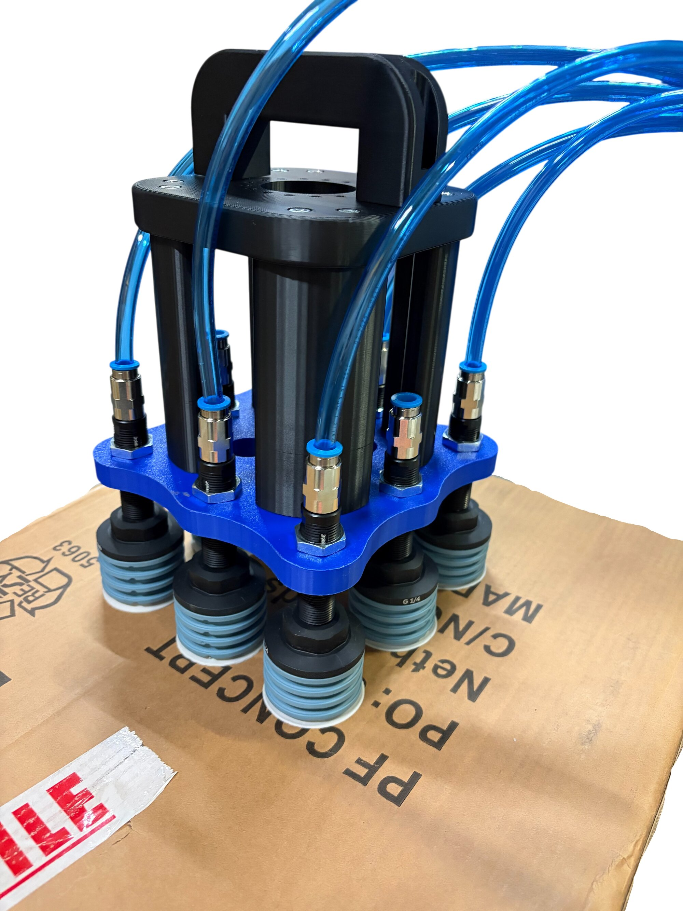
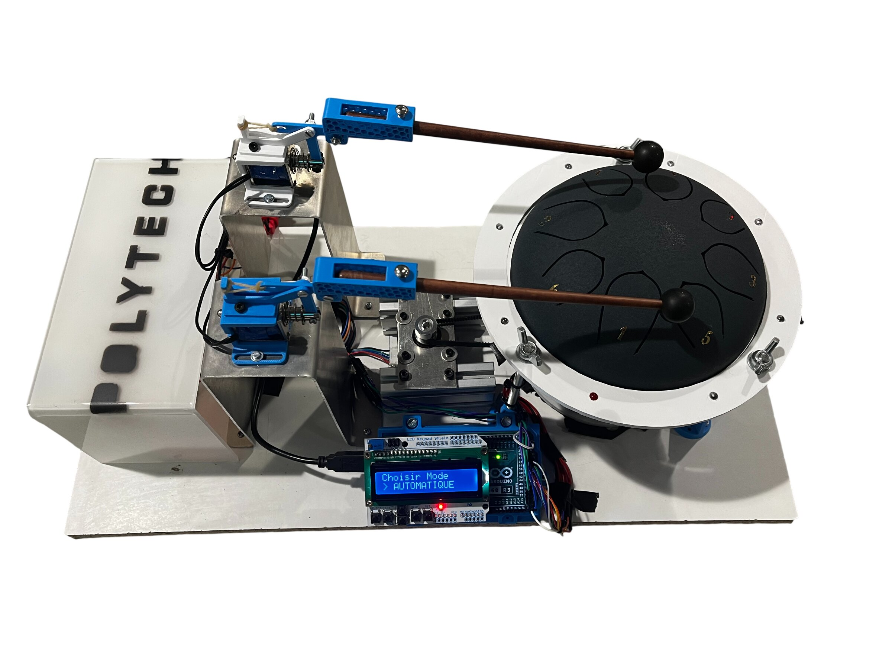

Formation
- MEC788 — Mécatronique : Systèmes intégrés et simulation sous Matlab.
- AER600 — Intro à l'aérospatiale : Propulsion, avionique/certification, aérodynamique, matériaux et structures aéronautiques.
- GTS504 — Ingénierie de la réadaptation : Conception biomécanique.
- SYS827 — Systèmes robotiques en contact (A2026) : Commande en force et interaction.
Expériences Professionnelles
- Conception d'un système de préhension robotisé multi-ventouses pour colis cartonnés (jusqu'à 20 kg) et polybags (3-4 kg) sur bras Fanuc.
- Réalisation des projets d'impression 3D du pôle Avant-Projets Innovants (VivaTech, série ARPI, boîtiers électroniques) et maintenance du parc Ultimaker.
Lecture de plans, usinage d'arbres de guidage, programmation CN et contrôle de tolérances.
Configuration de postes de travail, maintenance informatique et déploiement d'équipements.
Projets & Réalisations (Cliquez pour voir les détails)

Préhenseur robotisé multi-ventouses
Conception complète pour bras Fanuc : manutention de colis jusqu'à 20 kg et polybags souples (Stage La Poste).
Voir l'étude détaillée →
Projets CAO & Impression 3D (La Poste)
Figurines Wandercraft (VivaTech), série de 12 modules RSE (ARPI), boîtier d'écran et trophées bicolores.
Voir l'étude détaillée →
Panda Drum automatisé & éducatif
Projet d'équipe 4e année Polytech : système mécatronique avec Arduino, moteurs, LEDs d'apprentissage et CAO 3D.
Voir l'étude détaillée →
Créations personnelles CAO & 3D
Conception intégrale sous SolidWorks d'un calendrier perpétuel à rouleaux et de dessous de verre clipsables.
Voir l'étude détaillée →À propos de moi
Étudiante en 5e année à Polytech Annecy-Chambéry et en échange à l'ÉTS Montréal, je me spécialise en conception mécanique, mécatronique et industrialisation.
Curieuse, créative et rigoureuse, je recherche un stage de fin d'études de 6 mois dès février 2027 en Bureau d'Études ou industrialisation.
Compétences & Outils
Contact & Engagements
Responsable Communication BDE (2025-2026) : Création des visuels Instagram.
Courriel : leane.leroux95@gmail.com | Tél : +33 06 41 17 24 73